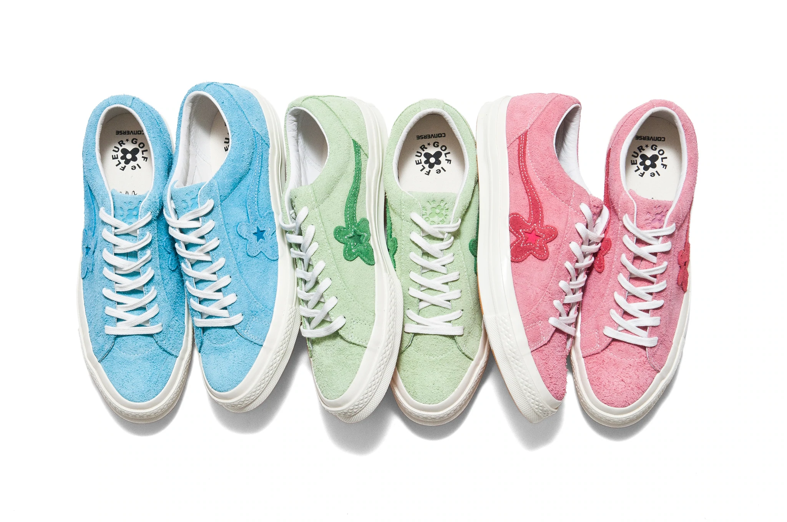

Golf Wang es una marca estadounidense de ropa de calle establecida en 2011 por el músico estadounidense Tyler, the Creator . El nombre Golf Wang es un Spoonerism de su colectivo musical basado en Los Ángeles, Odd Future Wolf Gang Kill Them All (OFWGKTA) o Odd Future para abreviar, del cual fue co-fundador .Golf Wang es conocido por su colorida estética visual. Desde entonces, la marca se ha expandido más allá de su afiliación con Odd Future y se ha establecido en la industria de la moda.Está co-diseñado por Tyler, the Creator y Phil Toselli. La marca ofrece ropa, calzado a través de Golf le Fleur, joyas y otros productos. "Holiday 1991", el primer lookbook de la marca, fue lanzado el 11 de diciembre de 2011.

En un homenaje al tenis de la decada de los ochentas y con el sello creativo de Le Fleur; la marca de Tyler the Creator, su colaboración con Lacoste llega a Argentina con un inventario muy limitado. Agotada en su totalidad en Estados Unidos la colección consta de 6 piezas unisex en colores pastel que van desde la icónica Polo a una chamarra en tejido extra suave de color rosa pálido.
Nos unimos para hacer de las mejores zapatillas, stock acabado en Estados Unidos en la primera semana y los ultimos modelos nuevos estan llegando a Argentina
